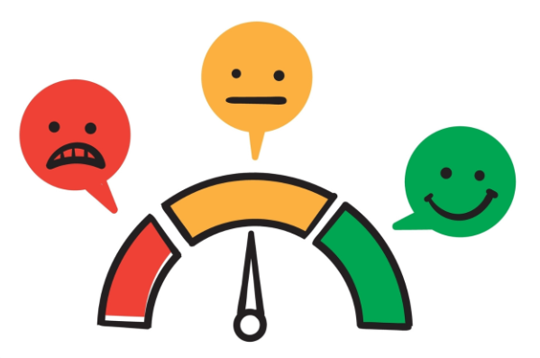

Sentence Level Sentiment Analysis

Text analysis enables the identification and extraction of sentiment information from text. By leveraging tools such as asent, sentimentr, and basic sentiment lexicons, it is possible to construct a sentiment classifier that can estimate whether the underlying sentiment of a given text is positive, negative, or neutral.
Pacakage Management
Using pacman to manage package dependencies.
Load Data
Our demonstration data are sourced from a news dataset collected from Factiva, consisting of 500 observations. The “link” refers to the links of these news articles. These news articles have been translated into English and undergone thorough text cleaning. Please find the data here.
Code
data <- read_rds("E:/OneDrive - HKUST Connect/SOSC/paper_with_jean/group_meeting/fifth/data_for_analysis_share.Rds")
glimpse(data)Rows: 500
Columns: 2
$ link <chr> "https://global.factiva.com/redir/default.aspx?P=sa&an=AF…
$ cleaned_text <chr> "the head of the women tennis association says that he is…Using asent
To use asent, a Python package in R, you need reticulate package to integrate Python code in your R script. You can change your python interpreter here:
install python packages:
Call python in R.
Code
reticulate::use_python("C:\\Users\\xhuangcb\\anaconda3\\envs\\pytorch_gpu\\python.exe") # call python in RThen:
| Tpying | To install |
|---|---|
| !pip install spacy | spacy |
| !pip install asent | asent |
| !pip install https://github.com/explosion/spacy-models/releases/download/en_core_web_lg-3.5.0/en_core_web_lg-3.5.0-py3-none-any.whl | pre-trained model |
from OOP to FP
Python is an object-oriented programming (OOP) language, and it is possible to convert Python classes into functions in R, which mainly support functional programming (FP) language.
Code
<asent.component.Asent object at 0x00000233B1ABA9D0>Code
nlp_safe <- possibly(.f = nlp, otherwise = "error!") # error handling
get_polarity <- nlp_safe("sentiment")$get_extension("polarity")[[3]] # load python function
get_sentiment_asent <- function(x) {
result <- nlp_safe(x) %>%
get_polarity() %>%
print() %>%
capture.output() %>%
str_extract_all("-?0\\.\\d+") %>%
unlist() %>%
as.numeric()
names(result) <- c("neg", "neu", "pos", "compound")
return(result)
}Try our function:
Code
get_sentiment_asent(data$cleaned_text[1]) neg neu pos compound
0.0440 0.6350 0.0710 0.1235 It is an analytical process of asent:
Using sentimentr
Our function using sentimentr.
Code
get_sentences_safe <- possibly(.f = get_sentences, otherwise = "error!") # sentences cutter
sentiment_by_safe <- possibly(.f = sentiment_by, otherwise = "error!") # sentiment classifier
get_sentiemnt_sentimentr <- function(x) {
x %>%
get_sentences_safe() %>%
sentiment_by_safe() %>%
unlist()
}Try it:
Code
get_sentiemnt_sentimentr(data$cleaned_text[1]) element_id word_count sd ave_sentiment
1.0000000 382.0000000 0.3115586 0.1770496 Word-level
Code
cal_sentiment <- function(x) {
x %>%
filter(value == 0) %>%
pull(value) %>%
length() -> neu
x %>%
filter(value > 0) %>%
pull(value) %>%
sum() -> pos
x %>%
filter(value < 0) %>%
pull(value) %>%
sum() -> neg
result <- c(neu, pos, neg)
names(result) <- c("neu", "pos", "neg")
return(result)
}
get_sentiment_word <- function(x) {
result <- x %>%
tibble(text = ., id = 1) %>%
unnest_tokens(word, text) %>%
filter(!word %in% stopwords::stopwords(source = "stopwords-iso")) %>%
left_join(get_sentiments("afinn")) %>% # you can try different dict
replace_na(list(value = 0)) %>%
nest(data = !id) %>%
mutate(sentiment = map(data, cal_sentiment)) %>%
pull(sentiment) %>%
unlist()
return(result)
}Try it:
Code
get_sentiment_word(data$cleaned_text[1])neu pos neg
138 18 -12 Using these functions in loop
You can use these function with for loop or just use mapto apply a them to each element of a vector or list in tibble.
Code
data <- data %>%
mutate(sentiment_asent = map(cleaned_text, get_sentiment_asent, .progress = TRUE))